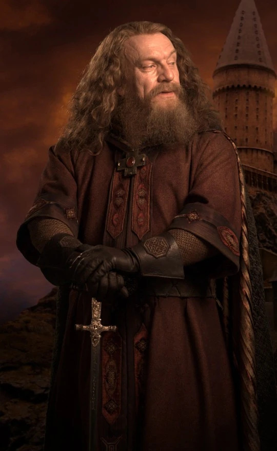

Гриффиндор

Главная |
Гриффиндор |
Пуффендуй |
Когтевран |
Слизерин |
Тест |
|
В Гриффиндор попадают те ученики, в основе характера которых лежат смелость и отвага, не даром на гербе этого факультета изображен лев - символ мужества и силы. Гриффиндорцев не способны смутить трудности и опасности, они готовы бороться, рисковать, отстаивая правду и справедливость. Ребят, которые учаться на этом факультете, обычно отличает благородное сердце и искреннее желание помогать тем, кто попадает в беду. Таковы и главные герои книги - Гарри Поттер и его друзья, ведь все они учатся в Гриффиндоре. |
Годрик Гриффиндор — маг, живший более тысячи лет назад, один из четырёх основателей «Хогвартса». В честь него назван один из факультетов Школы и его имя носит деревня Годрикова Впадина, где он когда-то родился.
Символ Гриффиндора — золотой лев на красном фоне. Годрик Гриффиндор больше всего ценил в людях храбрость и, руководствуясь этим критерием, подбирал себе учеников.
Деканы Гриффиндора:
|
 |
| Фотографии персонажей | Имена персонажей | Интересные факты |
 |
Гарри Поттер | Гарри Поттер — главный герой Поттерианы, член Золотого Трио. Самый знаменитый студент Хогвартса за последние сто лет. Первый волшебник, которому удалось противостоять смертельному проклятью «Авада Кедавра», благодаря чему он стал знаменитым и получил прозвище «Мальчик, Который Выжил». |
 |
Рон Уизли | Рон Уизли — один из главных персонажей Поттерианы, член Золотого Трио. Младший сын в семье Уизли. Обладатель специальной награды Хогвартса «За заслуги перед школой», полученной в 1993 году за спасение школы от чудовища Тайной комнаты — василиска. |
 |
Гермиона Грейнджер | Гермиона Грейнджер — одна из главных героинь Поттерианы, член Золотого Трио. Девушка очень любит учёбу и иногда бывает слишком высокомерной и чрезмерно гордится своими успехами в учёбе. На уроках она всегда старается ответить первой и выделиться своими знаниями, за что многие не без оснований считают её «всезнайкой» и «ботаничкой» |
 |
Невилл Долгопупс | Невилл Долгопупс — один из ключевых персонажей Поттерианы. На первых курсах был довольно рассеян, забывчив и неловок. Из всех дисциплин, изучаемых в Хогвартсе, больше всего преуспел в травологии. Впоследствии стал профессором Хогвартса по этому предмету. |